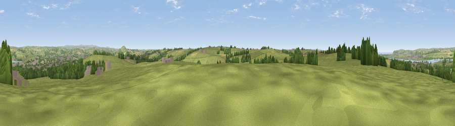

Viewpoint near Eastacombe
#16672 in England · top 35% of its area beats it · near EastacombeWhere it is
The exact computed spot (SS 52425 30375). Click the marker for map links.
The view, rendered

A 360° render of this exact spot computed from the terrain model, tree cover and land cover — summer colours, afternoon light, calibrated against photographs of famous viewpoints. Real trees, hedges and buildings will differ in detail.
The panorama
Grey silhouette: terrain skyline in each direction (720 bearings, Earth curvature and refraction included). Dashed green: skyline with trees (+15 m) and buildings (+8 m) as obstacles. Blue strip: how far the ground is visible on each bearing.
Where the view opens
Wedge length = distance to the farthest visible ground on that bearing (vegetation-aware). Rings at 10, 25 and 50 km.
What fills the view
71% grassland · 12% woodland · 7% cropland · 7% built-up · 2% water
Angular shares of the visible panorama (visual magnitude), not map area. Landscape diversity 0.43 (0–1 Shannon).
Key numbers
More beautiful places nearby
The staircase of upgrades: each row has a higher view potential than everything closer. Driving times are estimates from straight-line distance, calibrated against real road routing — check an actual route before setting out.
| Place | Direction | Drive | Score |
|---|---|---|---|
| Viewpoint near Eastacombe | ENE · 1 km | ~4 min | 57.6 |
| Viewpoint near Yelland | WNW · 2 km | ~6 min | 60.6 |
| Viewpoint near Yelland | W · 3 km | ~8 min | 72.6 |
| Viewpoint near Bishop's Tawton | E · 5 km | ~11 min | 73.8 |
| Codden Hill | E · 6 km | ~13 min | 81.3 |
| Viewpoint near Croyde | NW · 11 km | ~21 min | 83.7 |
| Viewpoint near Woolacombe | NNW · 13 km | ~24 min | 84.7 |
| Viewpoint near Combe Martin | NNE · 19 km | ~32 min | 86.9 |
51.05371, -4.10696 · source: screening · position refined by local search. Computed location — check access rights before visiting.